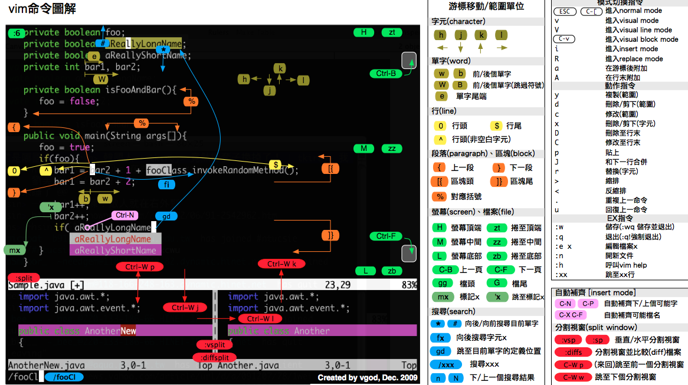

vi —— 终端中的编辑器
目标
vi简介打开和新建文件
三种工作模式
常用命令
分屏命令
常用命令速查图
01. vi 简介
1.1 学习 vi 的目的
在工作中，要对 服务器 上的文件进行 简单 的修改，可以使用
ssh远程登录到服务器上，并且使用vi进行快速的编辑即可常见需要修改的文件包括：
源程序
配置文件，例如
ssh的配置文件~/.ssh/config
在没有图形界面的环境下，要编辑文件，
vi是最佳选择！每一个要使用 Linux 的程序员，都应该或多或少的学习一些
vi的常用命令
1.2 vi 和 vim
在很多
Linux发行版中，直接把vi做成vim的软连接
vi
vi是Visual interface的简称，是Linux中 最经典 的文本编辑器vi的核心设计思想 —— 让程序员的手指始终保持在键盘的核心区域，就能完成所有的编辑操作

vi的特点：没有图形界面 的 功能强大 的编辑器
只能是编辑 文本内容，不能对字体、段落进行排版
不支持鼠标操作
没有菜单
只有命令
vi编辑器在 系统管理、服务器管理 编辑文件时，其功能永远不是图形界面的编辑器能比拟的
vim
vim = vi improved
vim是从vi发展出来的一个文本编辑器，支持 代码补全、编译 及 错误跳转 等方便编程的功能特别丰富，在程序员中被广泛使用，被称为 编辑器之神
查询软连接命令（知道）
在很多
Linux发行版中直接把vi做成vim的软连接
x# 查找 vi 的运行文件
$ which vi$ ls -l /usr/bin/vi$ ls -l /etc/alternatives/vi$ ls -l /usr/bin/vim.basic
# 查找 vim 的运行文件$ which vim$ ls -l /usr/bin/vim$ ls -l /etc/alternatives/vim$ ls -l /usr/bin/vim.basic 02. 打开和新建文件
在终端中输入
vi在后面跟上文件名 即可
xxxxxxxxxx$ vi 文件名如果文件已经存在，会直接打开该文件
如果文件不存在，会新建一个文件
2.1 打开文件并且定位行
在日常工作中，有可能会遇到 打开一个文件，并定位到指定行 的情况
例如：在开发时，知道某一行代码有错误，可以 快速定位 到出错代码的位置
这个时候，可以使用以下命令打开文件
xxxxxxxxxx$ vi 文件名 +行数提示：如果只带上
+而不指定行号，会直接定位到文件末尾
2.2 异常处理
如果
vi异常退出，在磁盘上可能会保存有 交换文件下次再使用
vi编辑该文件时，会看到以下屏幕信息，按下字母d可以 删除交换文件 即可
提示：按下键盘时，注意关闭输入法

03. 三种工作模式
vi有三种基本工作模式：命令模式
打开文件首先进入命令模式，是使用
vi的 入口通过 命令 对文件进行常规的编辑操作，例如：定位、翻页、复制、粘贴、删除……
在其他图形编辑器下，通过 快捷键 或者 鼠标 实现的操作，都在 命令模式 下实现
末行模式 —— 执行 保存、退出 等操作
要退出
vi返回到控制台，需要在末行模式下输入命令末行模式 是
vi的 出口
编辑模式 —— 正常的编辑文字

提示：在
Touch Bar的 Mac 电脑上 ，按ESC不方便，可以使用CTRL + [替代
末行模式命令
| 命令 | 英文 | 功能 |
|---|---|---|
| w | write | 保存 |
| q | quit | 退出，如果没有保存，不允许退出 |
| q! | quit | 强行退出，不保存退出 |
| wq | write & quit | 保存并退出 |
| x | 保存并退出 |
04. 常用命令
命令线路图
重复次数
在命令模式下，先输入一个数字，再跟上一个命令，可以让该命令 重复执行指定次数
移动和选择（多练）
vi之所以快，关键在于 能够快速定位到要编辑的代码行移动命令 能够 和 编辑操作 命令 组合使用
编辑操作
删除、复制、粘贴、替换、缩排
撤销和重复
查找替换
编辑
学习提示
vi的命令较多，不要期望一下子全部记住，个别命令忘记了，只是会影响编辑速度而已在使用
vi命令时，注意 关闭中文输入法
4.1 移动（基本）
要熟练使用
vi，首先应该学会怎么在 命令模式 下样快速移动光标编辑操作命令，能够和 移动命令 结合在一起使用
1) 上、下、左、右
| 命令 | 功能 | 手指 |
|---|---|---|
| h | 向左 | 食指 |
| j | 向下 | 食指 |
| k | 向上 | 中指 |
| l | 向右 | 无名指 |

2) 行内移动
| 命令 | 英文 | 功能 |
|---|---|---|
| w | word | 向后移动一个单词 |
| b | back | 向前移动一个单词 |
| 0 | 行首 | |
| ^ | 行首，第一个不是空白字符的位置 | |
| $ | 行尾 |
3) 行数移动
| 命令 | 英文 | 功能 |
|---|---|---|
| gg | go | 文件顶部 |
| G | go | 文件末尾 |
| 数字gg | go | 移动到 数字 对应行数 |
| 数字G | go | 移动到 数字 对应行数 |
| :数字 | 移动到 数字 对应行数 |
4) 屏幕移动
| 命令 | 英文 | 功能 |
|---|---|---|
| Ctrl + b | back | 向上翻页 |
| Ctrl + f | forward | 向下翻页 |
| H | Head | 屏幕顶部 |
| M | Middle | 屏幕中间 |
| L | Low | 屏幕底部 |
4.2 移动（程序）
1) 段落移动
vi中使用 空行 来区分段落在程序开发时，通常 一段功能相关的代码会写在一起 —— 之间没有空行
| 命令 | 功能 |
|---|---|
| { | 上一段 |
| } | 下一段 |
2) 括号切换
在程序世界中，
()、[]、{}使用频率很高，而且 都是成对出现的
| 命令 | 功能 |
|---|---|
| % | 括号匹配及切换 |
3) 标记
在开发时，某一块代码可能需要稍后处理，例如：编辑、查看
此时先使用
m增加一个标记，这样可以 在需要时快速地跳转回来 或者 执行其他编辑操作标记名称 可以是
a~z或者A~Z之间的任意 一个 字母添加了标记的 行如果被删除，标记同时被删除
如果 在其他行添加了相同名称的标记，之前添加的标记也会被替换掉
| 命令 | 英文 | 功能 |
|---|---|---|
| mx | mark | 添加标记 x，x 是 a~z 或者 A~Z 之间的任意一个字母 |
| 'x | 直接定位到标记 x 所在位置 |
4.3 选中文本（可视模式）
学习
复制命令前，应该先学会 怎么样选中 要复制的代码在
vi中要选择文本，需要先使用Visual命令切换到 可视模式vi中提供了 三种 可视模式，可以方便程序员选择 选中文本的方式按
ESC可以放弃选中，返回到 命令模式
| 命令 | 模式 | 功能 |
|---|---|---|
| v | 可视模式 | 从光标位置开始按照正常模式选择文本 |
| V | 可视行模式 | 选中光标经过的完整行 |
| Ctrl + v | 可视块模式 | 垂直方向选中文本 |
可视模式下，可以和 移动命令 连用，例如：
ggVG能够选中所有内容
4.4 撤销和恢复撤销
在学习编辑命令之前，先要知道怎样撤销之前一次 错误的 编辑动作！
| 命令 | 英文 | 功能 |
|---|---|---|
| u | undo | 撤销上次命令 |
| CTRL + r | redo | 恢复撤销的命令 |
4.5 删除文本
| 命令 | 英文 | 功能 |
|---|---|---|
| x | cut | 删除光标所在字符，或者选中文字 |
| d(移动命令) | delete | 删除移动命令对应的内容 |
| dd | delete | 删除光标所在行，可以 ndd 复制多行 |
| D | delete | 删除至行尾 |
提示：如果使用 可视模式 已经选中了一段文本，那么无论使用
d还是x，都可以删除选中文本
删除命令可以和 移动命令 连用，以下是常见的组合命令：
xxxxxxxxxx* dw # 从光标位置删除到单词末尾* d0 # 从光标位置删除到一行的起始位置* d} # 从光标位置删除到段落结尾* ndd # 从光标位置向下连续删除 n 行* d代码行G # 从光标所在行 删除到 指定代码行 之间的所有代码* d'a # 从光标所在行 删除到 标记a 之间的所有代码
4.6 复制、粘贴
vi中提供有一个 被复制文本的缓冲区复制 命令会将选中的文字保存在缓冲区
删除 命令删除的文字会被保存在缓冲区
在需要的位置，使用 粘贴 命令可以将缓冲区的文字插入到光标所在位置
| 命令 | 英文 | 功能 |
|---|---|---|
| y(移动命令) | copy | 复制 |
| yy | copy | 复制一行，可以 nyy 复制多行 |
| p | paste | 粘贴 |
提示
命令
d、x类似于图形界面的 剪切操作 ——CTRL + X命令
y类似于图形界面的 复制操作 ——CTRL + C命令
p类似于图形界面的 粘贴操作 ——CTRL + Vvi中的 文本缓冲区同样只有一个，如果后续做过 复制、剪切 操作，之前缓冲区中的内容会被替换
注意
vi中的 文本缓冲区 和系统的 剪贴板 不是同一个所以在其他软件中使用
CTRL + C复制的内容，不能在vi中通过P命令粘贴可以在 编辑模式 下使用 鼠标右键粘贴
4.7 替换
| 命令 | 英文 | 功能 | 工作模式 |
|---|---|---|---|
| r | replace | 替换当前字符 | 命令模式 |
| R | replace | 替换当前行光标后的字符 | 替换模式 |
R命令可以进入 替换模式，替换完成后，按下ESC可以回到 命令模式替换命令 的作用就是不用进入 编辑模式，对文件进行 轻量级的修改
4.8 缩排和重复执行
| 命令 | 功能 |
|---|---|
| >> | 向右增加缩进 |
| << | 向左减少缩进 |
| . | 重复上次命令 |
缩排命令 在开发程序时，统一增加代码的缩进 比较有用！
一次性 在选中代码前增加 4 个空格，就叫做 增加缩进
一次性 在选中代码前删除 4 个空格，就叫做 减少缩进
在 可视模式 下，缩排命令只需要使用 一个
>或者<
在程序中，缩进 通常用来表示代码的归属关系
前面空格越少，代码的级别越高
前面空格越多，代码的级别越低
4.9 查找
常规查找
| 命令 | 功能 |
|---|---|
| /str | 查找 str |
查找到指定内容之后，使用
Next查找下一个出现的位置：n: 查找下一个N: 查找上一个
如果不想看到高亮显示，可以随便查找一个文件中不存在的内容即可
单词快速匹配
| 命令 | 功能 |
|---|---|
| * | 向后查找当前光标所在单词 |
| # | 向前查找当前光标所在单词 |
在开发中，通过单词快速匹配，可以快速看到这个单词在其他什么位置使用过
4.10 查找并替换
在
vi中查找和替换命令需要在 末行模式 下执行记忆命令格式：
xxxxxxxxxx:%s///g
1) 全局替换
一次性替换文件中的 所有出现的旧文本
命令格式如下：
xxxxxxxxxx:%s/旧文本/新文本/g
2) 可视区域替换
先选中 要替换文字的 范围
命令格式如下：
xxxxxxxxxx:s/旧文本/新文本/g
3) 确认替换
如果把末尾的
g改成gc在替换的时候，会有提示！推荐使用！
xxxxxxxxxx:%s/旧文本/新文本/gc
y-yes替换n-no不替换a-all替换所有q-quit退出替换l-last最后一个，并把光标移动到行首^E向下滚屏^Y向上滚屏
4.11 插入命令
在
vi中除了常用的i进入 编辑模式 外，还提供了以下命令同样可以进入编辑模式：
| 命令 | 英文 | 功能 | 常用 |
|---|---|---|---|
| i | insert | 在当前字符前插入文本 | 常用 |
| I | insert | 在行首插入文本 | 较常用 |
| a | append | 在当前字符后添加文本 | |
| A | append | 在行末添加文本 | 较常用 |
| o | 在当前行后面插入一空行 | 常用 | |
| O | 在当前行前面插入一空行 | 常用 |

演练 1 —— 编辑命令和数字连用
在开发中，可能会遇到连续输入
N个同样的字符
在
Python中有简单的方法，但是其他语言中通常需要自己输入
例如：
**********连续 10 个星号
要实现这个效果可以在 命令模式 下
输入
10，表示要重复 10 次输入
i进入 编辑模式输入
*也就是重复的文字按下
ESC返回到 命令模式，返回之后vi就会把第2、3两步的操作重复10次
提示：正常开发时，在 进入编辑模式之前，不要按数字
演练 2 —— 利用 可视块 给多行代码增加注释
在开发中，可能会遇到一次性给多行代码 增加注释 的情况
在
Python中，要给代码增加注释，可以在代码前增加一个#
要实现这个效果可以在 命令模式 下
移动到要添加注释的 第 1 行代码，按
^来到行首按
CTRL + v进入 可视块 模式使用
j向下连续选中要添加的代码行输入
I进入 编辑模式，并在 行首插入，注意：一定要使用 I输入
#也就是注释符号按下
ESC返回到 命令模式，返回之后vi会在之前选中的每一行代码 前 插入#
05. 分屏命令
属于
vi的高级命令 —— 可以 同时编辑和查看多个文件
5.1 末行命令扩展
末行命令 主要是针对文件进行操作的：保存、退出、保存&退出、搜索&替换、另存、新建、浏览文件
| 命令 | 英文 | 功能 |
|---|---|---|
| :e . | edit | 会打开内置的文件浏览器，浏览要当前目录下的文件 |
| :n 文件名 | new | 新建文件 |
| :w 文件名 | write | 另存为，但是仍然编辑当前文件，并不会切换文件 |
提示：切换文件之前，必须保证当前这个文件已经被保存！
已经学习过的 末行命令：
| 命令 | 英文 | 功能 |
|---|---|---|
| :w | write | 保存 |
| :q | quit | 退出，如果没有保存，不允许退出 |
| :q! | quit | 强行退出，不保存退出 |
| :wq | write & quit | 保存并退出 |
| :x | 保存并退出 | |
| :%s///gc | 确认搜索并替换 |
在实际开发中，可以使用
w命令 阶段性的备份代码
5.2 分屏命令
使用 分屏命令，可以 同时编辑和查看多个文件
| 命令 | 英文 | 功能 |
|---|---|---|
| :sp [文件名] | split | 横向增加分屏 |
| :vsp [文件名] | vertical split | 纵向增加分屏 |
1) 切换分屏窗口
分屏窗口都是基于
CTRL + W这个快捷键的，w对应的英文单词是window
| 命令 | 英文 | 功能 |
|---|---|---|
| w | window | 切换到下一个窗口 |
| r | reverse | 互换窗口 |
| c | close | 关闭当前窗口，但是不能关闭最后一个窗口 |
| q | quit | 退出当前窗口，如果是最后一个窗口，则关闭 vi |
| o | other | 关闭其他窗口 |
2) 调整窗口大小
分屏窗口都是基于
CTRL + W这个快捷键的，w对应的英文单词是window
| 命令 | 英文 | 功能 |
|---|---|---|
| + | 增加窗口高度 | |
| - | 减少窗口高度 | |
| > | 增加窗口宽度 | |
| < | 减少窗口宽度 | |
| = | 等分窗口大小 |
调整窗口宽高的命令可以和数字连用，例如：
5 CTRL + W +连续 5 次增加高度
06. 常用命令速查图

vimrc
vimrc是vim的配置文件，可以设置 vim 的配置，包括：热键、配色、语法高亮、插件 等Linux中vimrc有两个位置，家目录下的配置文件优先级更高
xxxxxxxxxx/etc/vim/vimrc~/.vimrc
常用的插件有：
代码补全
代码折叠
搜索
Git 集成
……
网上有很多高手已经配置好的针对
python开发的vimrc文件，可以下载过来直接使用，或者等大家多Linux比较熟悉后，再行学习！